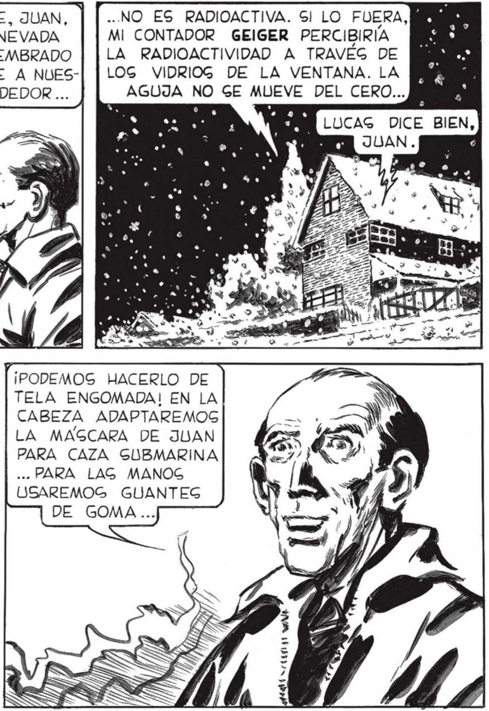
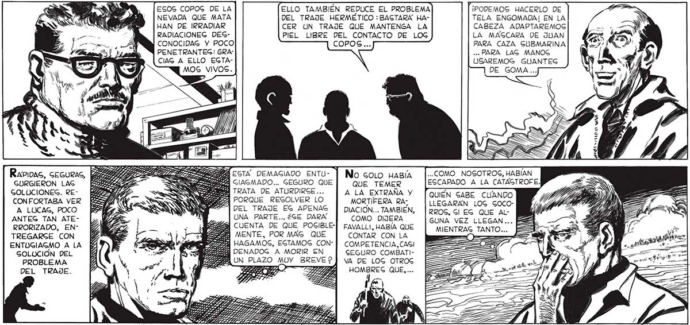

LO PRIMERO GERA HACER UN TRAJE HERMÉTICO. UN TRAJE COMO DE BUZO, QUE NOG PERMITA GALIR DE LA CAGA PARA TRAER EL AGUA, LOG VÍVERES, LOGS REMEDIOG QUE NECEGITAREMOG. Y LAG ARMAS... —>7—> A PERO NO EG FACIL HA- YA TE DIJE, JUAN, | |... NO ES RADIOACTIVA. SI LO FUERA, CER UN TRAJE BIEN QUE ESA NEVADA MI CONTADOR GEIGER PERCIBIRIA AIGLADO CONTRA LA QUE HA SEMBRADO | |LA RADIOACTIVIDAD A TRAVEG DE RADIOACTIVIDAD... LA MUERTE A NUES-| [LOG VIDRIOG DE LA VENTANA. LA TRO ALREDEDOR ... AGUJA NO GE MUEVE DEL CERO... o LUCAG DICE BIEN, ESOS COPOS DE LA ELLO TAMBIÉN REDUCE EL PROBLEMA ¡PODEMOS HACERLO DE NEVADA QUE MATA DEL TRAJE HERMÉTICO : BASTARA HA- TELA ENGOMADA! EN LA HAN DE IRRADIAR CER UN TRAJE QUE MANTENGA LA CABEZA ADAPTAREMOG RADIACIONEG DES- PIEL LIBRE DEL CONTACTO DE LOG LA MAGCARA DE JUAN CONOCIDAG Y POCO COPOS... PARA CAZA GUBMARINA PENETRANTEG: GRA" ... PARA LAG MANOG CIAG A ELLO EGTA- USAREMOS GUANTEG MOS VIVOS. DE GOMA... 5/7 AN ANA Rapipac, GEGURAS, s ES : No cono Había |..COMO NOGOTROG, HABÍAN GURGIERON LAG SA ] e QUE TEMER EGCAPADO A LA CATAGTROFE. GOLUCIONEG. RE- pe a 5% A LA EXTRAÑA Y [QUIÉN SABE CUANDO CONFORTABA VER NN <NSS MORTIFERA RA- LLEGARAN LOG GOcoA LUCAG, POCO Pig => ON DEL TRAJE EG APENAG | DIACION... TAMBIEN, | RROG, Sí EG QUE Al- '/ ANTEG TAN ATE- - MZ UNA PARTE... 26E DARA COMO DIJERA GUNA VEZ LLEGAN 7 RRORIZADO, EN- 4 . 4 5 CUENTA DE QUE POSIBLE-] FAVALLI, HABÍA QUE MIENTRAS TANTO... 1 TREGARSGE CON > le UA MENTE, POR MAG QUE CONTAR CON LA E cas ENTUGIAGMO ALA HE 1 ee HAGAMOS, EGTAMOG CON] COMPETENCIA,CAGI == GOLUCIÓN DEL Z e E SEGURO COMBATIPROBLEMA E ] ; : VA DE LOG OTROS DEL TRAJE. P Ke z O ZA HOMBRES QUE)... --_ZS7

